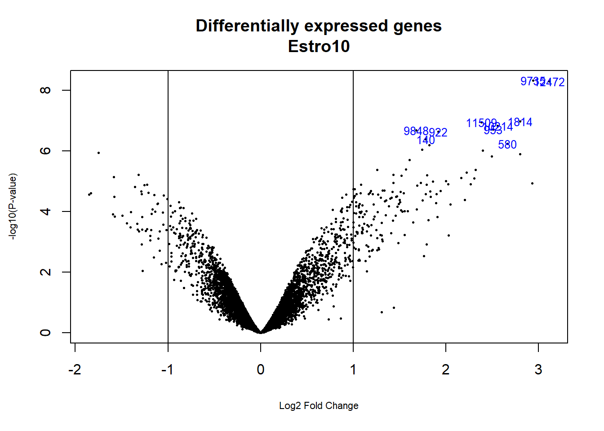
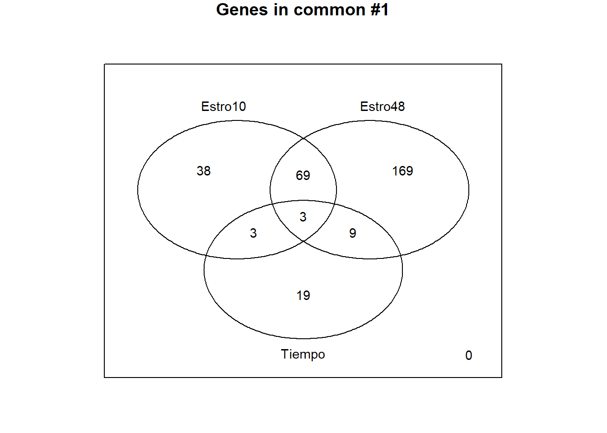

Como en las etapas anteriores la selección de genes diferencialmente expresados (GDE) puede basarse en distintas aproximaciones, desde la \(t\) de Student al programa SAM pasando por multitud de variantes.
En este ejemplo se aplicará la aproximación presentada por Smyth et al. (2004) basado en la utilización del combinada con un método para obtener una estimación mejorada de la varianza.
El capítulo 6 de tse manual o el manual del programa limma contienen explicaciones detalladas sobre construir un modelo lineal para este problema y como utilizarlo para seleccionar genes diferencialmente expresados.
El primer paso para el análisis es crear la matriz de diseño.
La situación discutida en este ejemplo se puede modelizar de dos formas, tal como se discute en la presentación citada más arriba:
Tal como se describe en el manual de limma la segunda parametrización resulta a menudo más comoda, a pesar de parecer menos intuitiva, porque permite formular con más facilidad que la de dos factores las preguntas que típicamente interesan a los investigadores.
El modelo lineal para este estudio será:
\[ \left( \begin{array}{r} y_1 \\ y_2 \\ y_3 \\ y_4 \\ y_5 \\ y_6 \\ y_7 \\ y_8 \end{array} \right) = \underbrace{\left( \begin{array}{rrrr} 1 & 0 & 0 & 0\\ 1 & 0 & 0 & 0\\ 0 & 1 & 0 & 0 \\ 0 & 1 & 0 & 0 \\ 0 & 0 & 1 & 0 \\ 0 & 0 & 1 & 0 \\ 0 & 0 & 0 & 1 \\ 0 & 0 & 0 & 1 \end{array} \right)}_{\mbox{Design Matrix}, \mathbf{X}} \left( \begin{array}{c} \alpha_1 \\ \alpha_2 \\ \alpha_3 \\ \alpha_4 \end{array} \right) + \left( \begin{array}{r} \varepsilon_1 \\ \varepsilon_2 \\ \varepsilon_3\\ \varepsilon_4 \\ \varepsilon_5\\ \varepsilon_6\\ \varepsilon_7\\ \varepsilon_8 \end{array} \right) \]
Los parámetros del modelos representan las cuatro combinaciones tiempo/estrogeno.
\[\begin{array}{ccc} \alpha_1&=& \mathbf{E} (log{Abs.10h} ),\\ \alpha_2&=& \mathbf{E} (log{Pres.10h} ),\\ \alpha_3&=& \mathbf{E} (log{Abs.48h} ),\\ \alpha_4&=& \mathbf{E} (log{Pres.48h} ). \end{array}\]
La matriz de diseño puede definirse manualmente o a partir de un factor creado específicamente para ello.
Manualmente, seria:
design.1<-matrix(
c(1,1,0,0,0,0,0,0,
0,0,1,1,0,0,0,0,
0,0,0,0,1,1,0,0,
0,0,0,0,0,0,1,1),
nrow=8,
byrow=F)
colnames(design.1)<-c("neg10h", "est10h", "neg48h", "est48h")
rownames(design.1) <- c("low10A", "low10B", "hi10A" , "hi10B", "low48A", "low48B", "hi48A" , "hi48B")
print(design.1)## neg10h est10h neg48h est48h
## low10A 1 0 0 0
## low10B 1 0 0 0
## hi10A 0 1 0 0
## hi10B 0 1 0 0
## low48A 0 0 1 0
## low48B 0 0 1 0
## hi48A 0 0 0 1
## hi48B 0 0 0 1Alternativamente puede crearse la matriz de diseño a partir de la información sobre las condiciones contenida en el phenoData, siempre que exista un campo adecuado para ello.
En este caso la columna Target se ha creado para utilizarla con esta finalidad. El objeto phenoData puede recrearse a partir del archivo original o extrayéndolo del objeto ExpresionSet que contiene los datos y las covariables.
## neg10h est10h neg48h est48h
## low10A 1 0 0 0
## low10B 1 0 0 0
## hi10A 0 1 0 0
## hi10B 0 1 0 0
## low48A 0 0 1 0
## low48B 0 0 1 0
## hi48A 0 0 0 1
## hi48B 0 0 0 1
## attr(,"assign")
## [1] 1 1 1 1
## attr(,"contrasts")
## attr(,"contrasts")$lev
## [1] "contr.treatment"Ambas matrices, design, design.1 resultan iguales.
Dado un modelo lineal definido a traves de una matriz de diseño pueden formularse las preguntas de interes como contrastes es decir comparaciones entre los parametros del modelo.
Cada parametrizacion distinta requerira de unos contrastes diferentes para las mismas preguntas, por lo que habitualmente se utilizara la parametrizacion que permita formular de forma mas clara las comparaciones de interes.
En este caso interesa estudiar
Esto se puede formular facilmente con la parametrizacion adoptada. \[\begin{array}{ccc} \beta_1^1 &=& \alpha_2-\alpha_1,\quad \mbox{Efecto del estrogeno pasadas 10 horas} \\ \beta_2^1 &=& \alpha_4-\alpha_3,\quad \mbox{Efecto del estrogeno pasadas 48 horas} \\ \beta_3^1 &=& \alpha_3-\alpha_1,\quad \mbox{Efecto del tiempo en ausencia de Estrogeno} \end{array}\]
cont.matrix <- makeContrasts (
Estro10=(est10h-neg10h),
Estro48=(est48h-neg48h),
Tiempo=(neg48h-neg10h),
levels=design)
cont.matrix## Contrasts
## Levels Estro10 Estro48 Tiempo
## neg10h -1 0 -1
## est10h 1 0 0
## neg48h 0 -1 1
## est48h 0 1 0Una vez definida la matriz de diseño y los contrastes podemos pasar a estimar el modelo, estimar los contrastes y realizar las pruebas de significación que nos indiquen, para cada gen y cada comparación, si puede considerarse diferencialmente expresado.
require(limma)
fit<-lmFit(eset_rma, design)
fit.main<-contrasts.fit(fit, cont.matrix)
fit.main<-eBayes(fit.main)El método implementado en amplía el análisis tradicional utilizando modelos de Bayes empíricos para combinar la información de toda la matriz de datos y de cada gen individual y obtener estimaciones de error mejoradas.
El análisis proporciona los estadísticos de test habituales como Fold–change \(t\)-moderados o \(p\)-valores ajustados que se utilizan para ordenar los genes de mas a menos diferencialmente expresados.
A fin de controlar el porcentaje de falsos positivos que puedan resultar del alto numero de contrastes realizados simultaneamente los p–valores se ajustan de forma que tengamos control sobre la tasa de falsos positivos utilizando el metodo de Benjamini y Hochberg (Benjamini and Hochberg (1995)).
La funcion topTable genera para cada contraste una lista de genes ordenados de mas a menos diferencialmente expresados.
topTabEstro10 <- topTable (fit.main, number=nrow(fit.main), coef="Estro10", adjust="fdr")
topTabEstro48 <- topTable (fit.main, number=nrow(fit.main), coef="Estro48", adjust="fdr")
topTabTiempo <- topTable (fit.main, number=nrow(fit.main) , coef="Tiempo", adjust="fdr")Una forma de visualizar los resultados es mediante un volcano plot que representa en abscisas los cambios de expresión en escala logarítmica y en ordenadas el “menos logaritmo” del p-valor o alternativamente el estadístico \(B\).

Cuando se realizan varias comparaciones a la vez puede resultar importante ver que genes cambian simultáneamente en más de una comparación. Si el número de comparaciones es alto también puede ser necesario realizar un ajuste de p-valores entre las comparaciones, distinto del realizado entre genes.
La función decidetests permite realizar ambas cosas. En este ejemplo no se ajustaran los p–valores entre comparaciones. Tan solo se seleccionaran los genes que cambian en una o más condiciones.
EL resultado del análisis es una tabla res que para cada gen y cada comparación contiene un 1 (si el gen esta sobre-expresado o “up” en esta condicion), un 0 (si no hay cambio significativo) o un -1 (si esta “down”-regulado).
Para resumir dicho análisis podemos contar qué filas tienen como mínimo una celda distinta de cero:
## Estro10 Estro48 Tiempo
## Down 23 99 27
## NotSig 12512 12375 12591
## Up 90 151 7Un diagrama de Venn permite visualizar la tabla anterior sin diferenciar entre genes “up” o “down” regulados.
\begin{figure}
\end{figure}